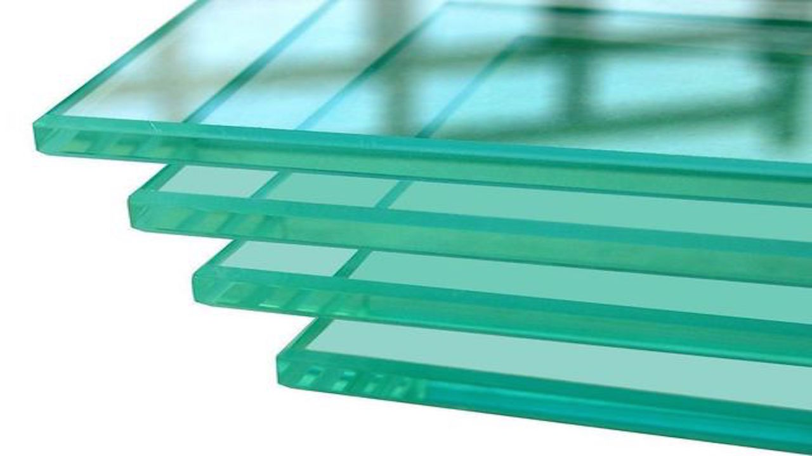
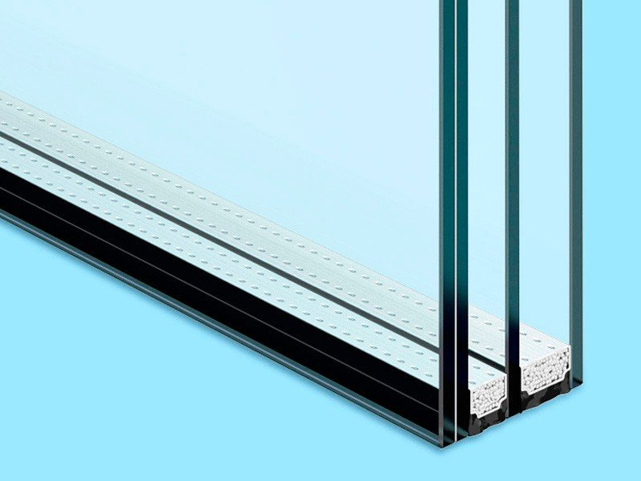
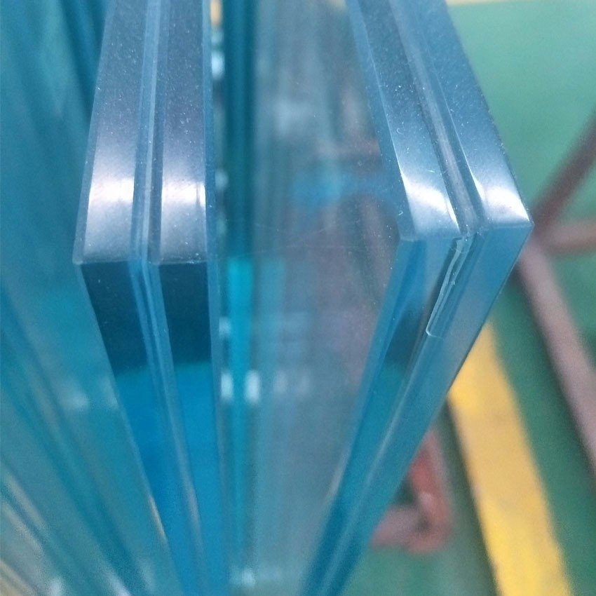
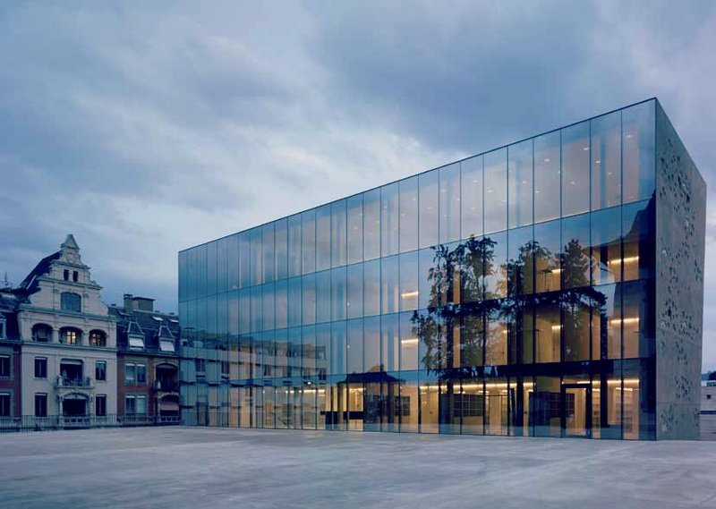
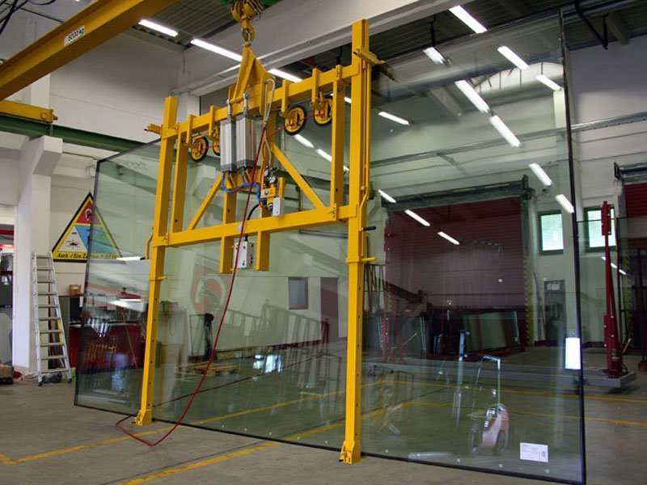
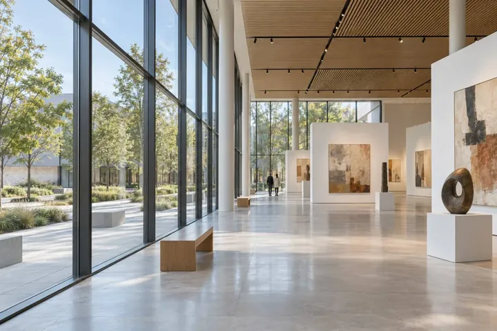
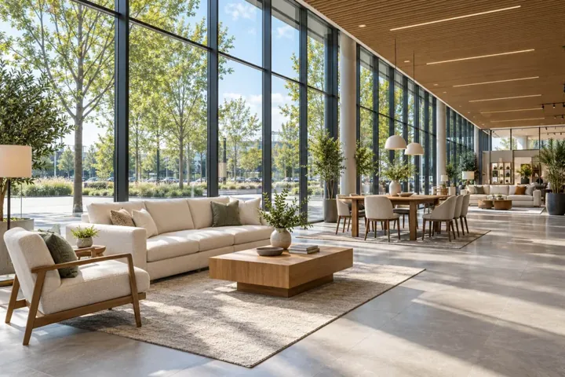

Стекло для ваших идей.
Производство
стекла в Москве
Стекольная компания «Приоргласс» — это предприятие полного цикла, изготавливающее все виды стекол и светопрозрачных конструкций любой сложности на заказ. Мы предлагаем полный спектр услуг от производства до монтажа.
начало нашей истории
реализованных проектов
толщина производимого стекла
на изготовление изделий*
Производство стекла
Для архитектуры, интерьера и ваших идей.
Изготавливаем по индивидуальным размерам.

Стекло
Закалённое, цветное, безопасное

Стеклопакеты
От одной камеры до джамбо-формата

Триплекс
Многослойное стекло для ваших задач
Остекление фасадов
Светопрозрачные решения любой сложности —
от проектирования до монтажа.

Остекление зданийПредлагаем монтаж стеклянных конструкций под ключ +
Стеклянные перегородки
Больше света. Больше пространства.
Для офиса, дома и коммерческих интерьеров.
- Офисные перегородки
- Цельностеклянные перегородки
- Стеклянные перегородки лофт
- Межкомнатные перегородки
- Безрамные перегородки
- Мобильные перегородки
- Перегородки для гардероба
- Шумоизоляция перегородок

Другие конструкции из стекла
Услуги по
обработке стекла
Осуществляем услуги обработки стекла
на собственном производстве.
Мы на порталах поставщиков
Как мы работаем
От первого звонка до готового решения.
Выберите удобный формат работы.
Изготовление изделий с монтажом.
- ↗
Вы оставляете заявку на сайте или звоните нам
- ↗
Наш менеджер связывается с Вами и уточняет подробности заказа
- ↗
Наш специалист приезжает к Вам и осуществляет необходимые замеры
- ↗
Мы составляем коммерческое предложение и отправляем его Вам
- ↗
Вы вносите оплату. Мы приступаем к изготовлению заказа
- ↗
Мы доставляем Ваш заказ
- ↗
Мы монтируем Ваш заказ
- ↗
Вы остаетесь довольны и обращаетесь к нам снова
Изготовление изделий без монтажа.
- ↗
Вы оставляете заявку на сайте или звоните нам
- ↗
Наш менеджер связывается с Вами и уточняет подробности заказа
- ↗
Мы составляем коммерческое предложение и отправляем его Вам
- ↗
Вы вносите оплату. Мы приступаем к изготовлению заказа
- ↗
Мы изготавливаем стекло наилучшего качества
- ↗
Вы остаетесь довольны и обращаетесь к нам снова
Почему мы?
Собственное производство.
Ответственность за каждый этап.
Отличные цены
Мы - производители. Это обеспечивает низкие цены на продукцию.
Сроки
Мы производим изделия в срок от 1 до 7 рабочих дней (в зависимости от вида изделий)
Производство
Все изделия изготавливаются на наших собственных производственных мощностях.
Доставка
У нас есть специальный транспорт, оборудованный для доставки стекла и зеркал
Джамбо
Для работы со стеклом у нас есть специальный джамбо-стол для резки стекла и триплекса
Качество
В производстве мы используем только стекло и зеркало наивысшего качества
Многофункциональность
У Вас есть возможность заказать все в одном месте
Система скидок
Для постоянных заказчиков у нас индивидуальные условия и система скидок.
* Срок изготовления зависит от вида изделий и сложности заказа.

Посмотреть видеоо производстве
Наш завод стекла
в Москве
Наш высокотехнологичный завод по производству стекла в Москве оснащен передовым оборудованием, позволяющим оперативно выполнять все виды работ для создания изделий по индивидуальным заказам. На производстве установлены: закалочная печь и печи для триплекса, сверлильные, фрезеровальные, шлифовальные станки и прочая техника для обработки заготовок, столы для резки, линия сборки стеклопакетов, пескоструйные аппараты и т. п. Это дает нам возможность не привлекать субподрядчиков и посредников, а потому предлагать заказчикам выгодные цены.
Мы специализируемся на производстве изделий из стекла (закаленное стекло, триплекс, стеклопакеты и т.д.), а также установке светопрозрачных конструкций (стеклянные перегородки, алюминиевое остекление, ограждения из стекла, козырьки из стекла и т.д.).
Больше о компанииДля кого работает наше стекольное производство в Москве
+
Собственное стекольное производство в Москве дает нам возможность удовлетворять пожелания даже самых взыскательных клиентов. На текущий день постоянными заказчиками компании «Приоргласс» являются строительные фирмы и мастерские разных спецификаций, студии дизайна, производители офисной и корпусной мебели, а также оборудования для торговли. В числе направлений нашей работы — изготовление алюминиевых конструкций и джамбо-стеклопакетов. За годы деятельности нами было реализовано более 1000 проектов по фасадному остеклению и внутреннему обустройству торговых центров.
Мы всегда рады новым клиентам и готовы составить индивидуальное предложение для каждого. Изготавливая и устанавливая стекла разных типоразмеров, фактур, форм и цветов, мы преображаем пространство и делаем мир практичнее и ярче.
В багаже компании успешно исполненные гос. контракты и долгосрочные отношения с крупными игроками коммерческого сектора (ПИК, Главстрой, Крост, Эталон, А101, Левел Групп, Самолет, Основа),а также отельного бизнеса (Мариотт, Свисс Отель, Ритц Карлтон, Балчуг и т.д.)
Вряд ли сегодня есть хоть один торговый центр в Московском регионе, где наша компания не устанавливала ограждения или перегородки (Вегас, Коламбус, Европейский, Филион, Черемушки, Авиапарк, Метрополис, Афимолл, Ривьера, Океания, ТЦ Город, Мега, Саларис, Небо, ТЦ Сокольники).
Наши стекла используются при строительстве новых станций Московского метрополитена, в частности станции: Электрозаводская, Саларьево, Зюзино, Новаторская, Тютчевская, ЗИЛ, Генерала Тюленева, а также в остеклении станций РЖД (Ильинская, Раменское, Панки, Отдых, Бутово и т.д.).
С 2016 года мы активно поставляем стекло для остановок общественного транспорта в Москве, Люберцах, Реутове, Саратове, Смоленске, Красногорске, Балашихе, Мытищах, Лосино-Петровском и т.д.
Наши стекла используются в транспортном остеклении: Камаз, ПАЗ, ЛИАЗ, поездов РЖД, а также составов всех метрополитенов страны.
В банковском секторе мы успели обустроить офисы следующих банков: Фора-банк, Банк Стратегия, Альфа-банк, Промсвязьбанк, СМП Банк, Сбербанк, Авангард.
В 2021 году нами был успешно реализован проект по остеклению крупнейшего ТРЦ северо-кавказского федерального округа «Грозный Молл» в объеме 15 000 м.кв. витражей.
Среди гос. заказчиков нашими постоянными партнерами являются: ВДНХ, Кремлевский дворец, Парк Зарядье, Концерн Калашников, Роскосмос, Росатом, Роснефть, Газпром и другие.
Изготовление изделий из стекла на заказ
+
Изготовление изделий из стекла на заказ ведется по своим чертежам или «под ключ». Мы производим полотна толщиной от 2 до 19 мм с любыми желаемыми характеристиками: безопасное, армированное, пуленепробиваемое, огнеупорное, моллированное, энергосберегающее, витражное и т. д.
Наша московская фабрика стекла создает надежные, долговечные стеклопакеты с количеством камер, которое пожелает заказчик — 1, 2, 3 или более. Возможно изготовление систем размера джамбо (6000х3210 мм). Максимальные габариты гнутых конструкций — 2400х4200 мм. Для остекления мы применяем 8 видов профилей, что позволяет учитывать нагрузку на несущие конструкции и другие особенности объекта.
Также у нас вы можете купить изделия из стекла для внутренней отделки помещений: межкомнатные двери и перегородки, зеркала и зеркальные панно, перегородки для ванной комнаты и пр.
Бонусы для наших клиентов
Примеры работ

Черемушкинский рынок
г. Москва

ЖК Береговой
г. Москва, Береговой проезд / Новофилёвский проезд

ЖК РЭД 7
г. Москва

Футуро Парк
Московская область, городской округ Истра, деревня Покровское, Заречная улица

ЖК На Пришвина
г. Москва, ул. Пришвина, вл. 4А

ЖК Город Дейли
г. Москва, Дмитровское шоссе, д. 107

ЖК Бульвар Матроса Железняка
Бульвар Матроса Железняка 11

ЖК Мир Митино
г. Москва, ул. Муравская

ЖК Балаклавский
Балаклавский пр-т д. 2

ЖК Счастье
ул. Зеленодольская д. 41, к. 2
Нас выбирают
Строительные компании, торговые центры,
отели и государственные заказчики


Все клиенты +


Статьи

Остекление выставочных залов и галерей: управление светом, сохранность экспонатов и комфорт посетителей
Стеклянные фасады, окна и светопрозрачные покрытия помогают создать выразительную архитектуру выставочного пространства. Они связывают интерьер с окружающей средой, открывают обзор и позволяют использовать дневное освещение. Однако в галерее свет становится не только инструментом оформления, но и фактором, влияющим на состояние экспонатов. Поэтому остекление выставочных залов требует согласования архитектурных, инженерных и экспозиционных решений. Важно определить, где […]
Читать статью
Остекление мебельных и интерьерных шоурумов: как представить экспозицию и сохранить качество материалов
В мебельном и интерьерном шоуруме покупатель выбирает не только отдельный предмет, но и будущую обстановку своего дома. Здесь важно показать оттенок обивки, рисунок древесины, фактуру камня, блеск металлической фурнитуры и сочетание отделочных материалов. Остекление становится частью этой презентации: оно определяет видимость экспозиции с улицы, влияет на дневное освещение и участвует в формировании микроклимата. При проектировании […]
Читать статьюОстекление автосалонов: как совместить презентацию автомобилей, комфорт и безопасность
Остекление автосалона определяет, насколько хорошо автомобили видны с улицы, как воспринимаются их цвет и форма, комфортно ли посетителям осматривать экспозицию. При этом прозрачный фасад остаётся частью наружной оболочки здания: он должен выдерживать расчётные нагрузки, защищать помещение от осадков и участвовать в поддержании необходимого микроклимата. Поэтому выбор остекления для автомобильного шоурума требует комплексного подхода. Крупные стёкла […]
Читать статьюБольшие идеи
начинаются с диалога.
Расскажите о задаче — поможем подобрать
стекло и подходящее решение.